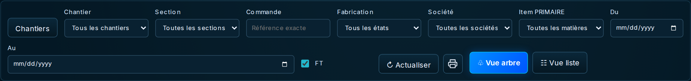
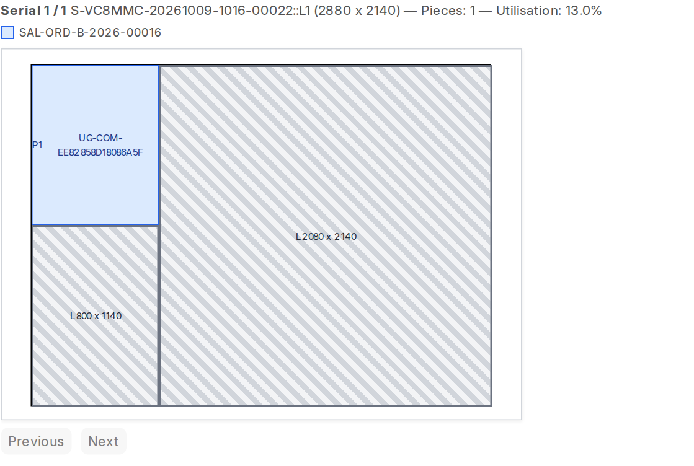
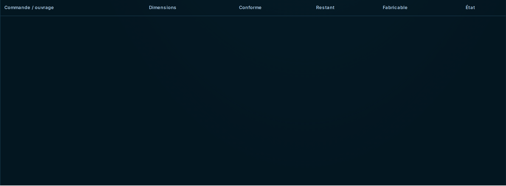
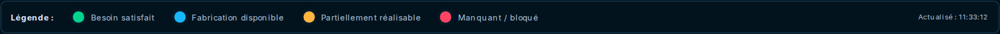
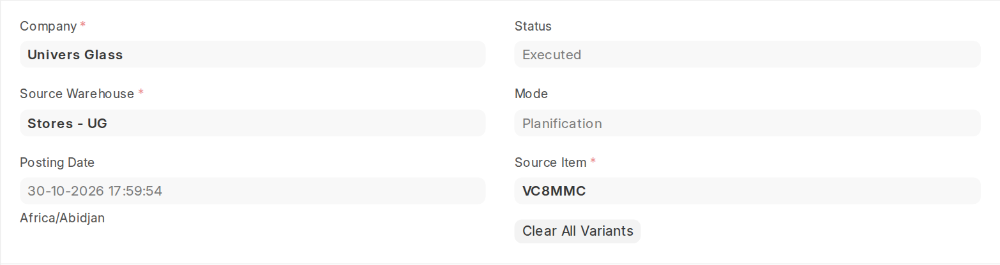
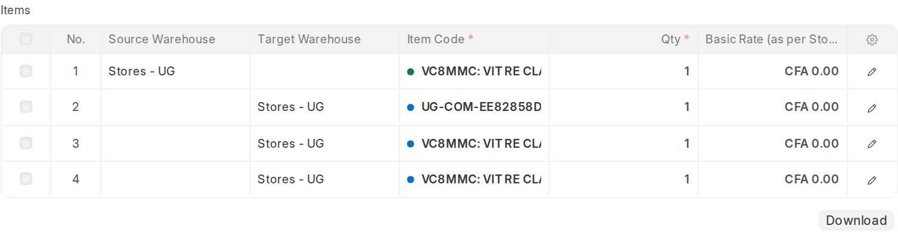
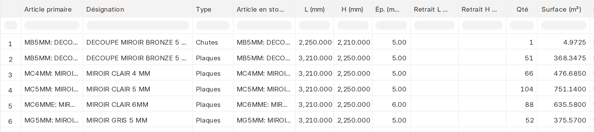
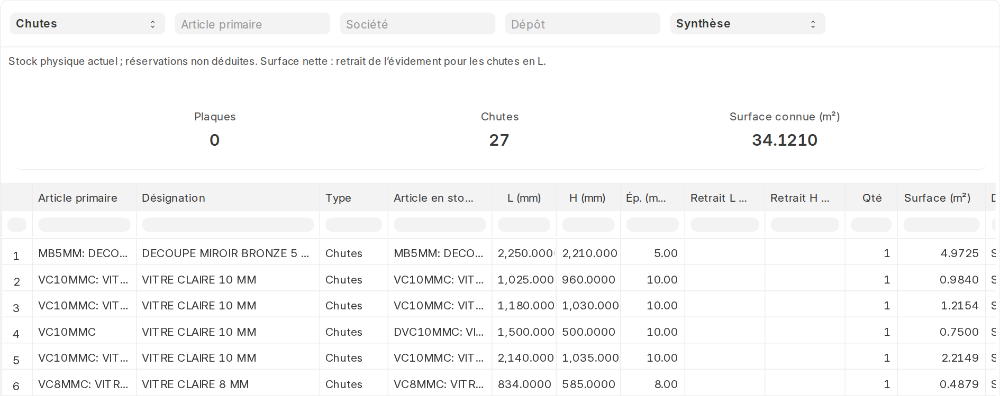

Le cockpit
atelier
Suivre les besoins de fabrication, préparer les plans de découpe et contrôler les mouvements de production.

Pour les responsables atelier habilités, sur les commandes A et B accessibles à leur compte.

18 captures réelles. Aucun besoin n’était en attente dans le cockpit lors de la capture ; les exemples de découpe et de stock proviennent de documents existants. Aucune opération métier n’a été exécutée pour le guide.
Accéder au cockpit et comprendre son périmètre
Le cockpit atelier suit les besoins de fabrication des commandes. Il permet de préparer les découpes dans un MCP, puis de réaliser les assemblages lorsque leurs composants sont disponibles.
- Ouvrir Univers Glass → Atelier Univers Glass ou l’adresse https://fimaci.f.frappe.cloud/app/workshop-cockpit.
- Vérifier les filtres et attendre la fin de l’actualisation.
- Retrouver la commande à traiter, puis développer sa branche.
- Sélectionner la commande ou l’ouvrage pour lire ses besoins et ses actions dans le panneau de droite.
État réel au moment des captures
Le 31 octobre 2026, le cockpit consulté sans filtre ne renvoie aucune fabrication en attente. Le guide utilise cet écran réel, le rapport de stock et un MCP exécuté existant ; aucune commande ni fabrication n’a été créée pour illustrer le parcours.
Les procédures de sélection et de confirmation ci-après expliquent les actions disponibles lorsqu’un besoin apparaît. Elles n’ont pas été exécutées pendant la préparation de ce guide.
Filtrer les besoins de fabrication
| Filtre | Utilisation |
|---|---|
| Recherche | Retrouver une commande ou un article par texte. |
| Chantier et section | Concentrer l’affichage sur une partie d’un dossier. Revenir à Tous pour retrouver l’ensemble. |
| Commande | Saisir sa référence exacte, par exemple SAL-ORD-B-2026-00016. |
| Fabrication | Choisir Tous les états, Besoin satisfait, Réalisable, Partielle ou Bloquée. |
| Société | Séparer les stocks et les fabrications des sociétés. |
| Item PRIMAIRE | Cibler une famille de matière : verre clair, miroir, épaisseur… |
| Du / Au | Restreindre la période des dates de commande. |
Si des dimensions complémentaires sont proposées, vérifier leur valeur avant l’action de fabrication. Elles servent au traitement ; ne pas les confondre avec les dimensions géométriques des pièces.
Naviguer dans l’arbre et les liens
- Cliquer sur la flèche d’une commande pour développer ses ouvrages et composants. Tout développer ouvre les branches chargées ; Réduire les replie.
- Glisser dans le fond du graphe pour le déplacer. Utiliser + et − ou Ctrl + molette pour ajuster le zoom.
- Cliquer sur la carte d’un ouvrage ou d’un composant pour lire son détail.
- Passer en Vue liste pour consulter les mêmes besoins en tableau.
- Laisser FT coché pour afficher les liens vers les fiches techniques accessibles. Cliquer sur une fiche ouvre sa page.
Ce schéma explique la lecture des liens ; il ne représente pas un dossier créé pour le guide. Un MCP lié apparaît à l’extrême droite, par ordre de création de haut en bas. Il peut relier plusieurs stocks compatibles et plusieurs commandes.

Lire les états, quantités et disponibilités

| Indicateur | Lecture |
|---|---|
| Commandes en cours | Commandes ayant des besoins de fabrication encore affichés. Ce n’est pas le nombre de commandes commerciales impayées. |
| Ouvrages à fabriquer | Lignes finales à traiter ; ne pas les confondre avec le total des pièces. |
| Réalisables maintenant | Quantités réalisables avec les ressources disponibles dans le calcul courant. |
| Découpes manquantes | Quantités de découpes non couvertes par les disponibilités allouées. |
| Commandes bloquées | Commandes pour lesquelles aucun besoin n’est immédiatement réalisable. |
| Besoin satisfait / disponible / partiel / bloqué | Lecture de l’avancement et de la disponibilité du nœud concerné. |
Dans le panneau de droite
Besoin total est la quantité attendue. Fabriqué conforme attribué correspond à la production reconnue pour cette ligne. Besoin restant est ce qui manque encore. Fabricable indique ce qui peut être réalisé maintenant.
Un tiret signifie qu’aucune valeur n’est présentée à ce niveau ; ne pas l’interpréter comme un stock nul. Relire le composant concerné et ses dimensions.
Choisir la quantité et préparer l’action
- Sélectionner la commande pour traiter tous ses besoins actuels, ou sélectionner un ouvrage pour un traitement partiel.
- Pour un ouvrage, saisir une quantité entière positive dans Quantité à traiter, sans dépasser le besoin autorisé.
- Cliquer sur l’action proposée : Fabriquer, Préparer MCP ou Vérifier la fabrication.
- Lire la fenêtre de préparation : quantité, assemblages, composants manquants, dépôts et séries prévus.
- Confirmer seulement après ce contrôle ; sinon fermer avec Annuler.
| Résultat de la préparation | Suite à donner |
|---|---|
| Préparer le MCP | Des découpes sont nécessaires. Créer et ouvrir la simulation, puis poursuivre dans l’écran MCP. |
| Confirmer la fabrication | Les composants permettent un assemblage. Relire les mouvements avant Confirmer les Repack. |
| Fabrication bloquée | Corriger les manquants ou terminer les découpes déjà planifiées. Ne pas créer un doublon pour contourner le message. |
Dans une vue filtrée qui ne montre qu’une partie de la commande, sélectionner une ligne d’ouvrage pour agir. Pour lancer la commande entière, reprendre la vue complète et relire le périmètre.
Préparer un MCP et contrôler les commandes
- Depuis le besoin à découper, ouvrir sa préparation. Relire les découpes manquantes et la matière concernée.
- Cliquer sur Créer et ouvrir la simulation lorsque le périmètre convient. Cette action crée le plan ; elle ne réalise pas encore la découpe.
- Dans le MCP, vérifier société, matière source, dépôt et commandes sélectionnées.
- Contrôler les pièces à planifier et les plaques ou chutes candidates avant de poursuivre la simulation.
La sélection de commandes ne garantit pas que toutes leurs pièces tiendront dans le plan calculé. Lire les quantités demandées, planifiées et manquantes ; traiter le reliquat avec un autre plan lorsque nécessaire.
Si aucune plaque libre compatible n’est trouvée, vérifier matière, épaisseur, dépôt, stocks, réservations et plans déjà ouverts.
Lire et vérifier le plan de découpe
- Vérifier la série d’entrée, ses dimensions et son dépôt. Une source candidate n’est pas forcément une source effectivement utilisée.
- Lire les pièces placées : article, commande, dimensions, quantités et orientation.
- Comparer les pièces demandées, planifiées et manquantes. Une simulation partielle laisse du travail à traiter.
- Contrôler le trait de coupe, la rotation autorisée et les règles de récupération des chutes avant validation.
- Enregistrer la simulation et ses ajustements dans l’écran MCP selon les actions disponibles.
Voir la ligne de la pièce effectivement planifiée. · Voir le résumé du plan réel.


Valider le MCP et vérifier son Repack

- Relire les commandes, pièces, entrées utilisées et éventuelles chutes à remettre en stock.
- Vérifier que le plan de découpe est bien enregistré, puis valider le MCP avec un compte habilité.
- Attendre la fin : la validation exécute le Repack lié dans la même opération.
- Vérifier le statut Executed / Exécuté et ouvrir le Repack lié pour contrôler les mouvements.
- Revenir au cockpit et actualiser les données.
Exemple vérifié en production : le MCP 26MCP1000172 est exécuté et son Repack MAT-STE-2026-00180 est validé. Ces documents existaient avant les captures.
Un MCP sans plan enregistré n’est pas prêt à être exécuté. Ouvrir sa simulation et vérifier le plan avant de demander sa validation.
Assembler les ouvrages après découpe
Après exécution des découpes, les composants peuvent être disponibles sans que l’ouvrage final soit encore assemblé. Revenir au cockpit pour lire le besoin restant du parent.
- Actualiser le cockpit après la validation du MCP.
- Sélectionner l’ouvrage parent ; contrôler ses composants disponibles et la quantité encore à fabriquer.
- Saisir la quantité à traiter puis préparer Fabriquer.
- Relire les assemblages et les mouvements proposés, notamment dépôts et séries consommées.
- Confirmer les Repack, attendre le résultat et vérifier les documents liés ainsi que l’avancement.

Pour les vitres, contrôler le dépôt proposé Stores - UG. Il s’agit d’un défaut de saisie ; vérifier le dépôt réel des composants avant toute opération.
Consulter le stock de plaques et de chutes
- Cliquer sur l’icône d’impression à côté d’Actualiser dans le cockpit.
- Le rapport UG - Stock de Vitres s’ouvre. Choisir Plaques, Chutes ou Les deux directement dans le rapport.
- Filtrer la matière primaire, la société et le dépôt si nécessaire.
- Choisir Synthèse pour regrouper les formats, ou Détail par série pour identifier chaque source.

Pour une chute en L, les retraits et la surface nette précisent la géométrie utile. Une anomalie de géométrie doit être vérifiée avant d’utiliser la série.
Imprimer et conserver les documents de suivi

- Contrôler les filtres du rapport avant l’impression : type de stock, matière, société, dépôt et présentation.
- Utiliser Imprimer le stock pour préparer le relevé en paysage. Enregistrer en PDF depuis la fenêtre d’impression si nécessaire.
- Pour un export tabulaire, utiliser les actions d’export du rapport disponibles à votre compte.
- Utiliser Retour au cockpit pour poursuivre le travail.
- Pour imprimer un plan ou un mouvement, ouvrir le MCP ou le Repack concerné et utiliser son impression, avec le format approprié.
Voir le rapport complet. · Voir le Repack existant lié au plan.


Suivre les tâches et résoudre les blocages
| Situation | Contrôle à effectuer |
|---|---|
| Commande absente | Validation de la commande et de sa fiche technique, présence de fabrication restante, droits, société et filtres. |
| Aucune fabrication en attente | Aucun besoin admissible ne correspond à l’affichage. Cela ne signifie pas que toutes les commandes sont livrées ou réglées. |
| Stock physique mais rien de fabricable | Vérifier dimensions, épaisseur, séries, dépôt et réservations. Une plaque doit encore être découpée pour devenir un composant. |
| Découpes déjà planifiées | Retrouver le MCP lié et terminer ses découpes avant de recréer un plan ou de lancer l’assemblage. |
| Ce MCP ne possède pas de plan enregistré | Ouvrir le MCP et préparer/enregistrer sa simulation. Ne pas forcer un Repack sans plan. |
| Quantité ou disponibilité changée | Actualiser, sélectionner de nouveau le besoin et relire sa préparation. Ne pas confirmer un ancien aperçu. |
| Données à corriger | Lire l’alerte de ligne : matière, épaisseur, dimensions, article sérialisé ou composition. Corriger à la source avec le responsable. |
| Accès refusé | Faire vérifier les droits atelier, stock et MCP, ainsi que les règles d’accès aux commandes concernées. |
Avant de terminer la journée
Vérifier les plans encore brouillons, les pièces manquantes, les Repack validés, les séries produites et les ouvrages restant à assembler. Transmettre les blocages avec le numéro de commande et le numéro du MCP.
Captures du 31 octobre 2026 sur fimaci.f.frappe.cloud. Aucune commande, aucun MCP, aucune fabrication et aucun mouvement n’a été créé ou validé pour ce guide. Les captures montrent l’état réel disponible à cette date.